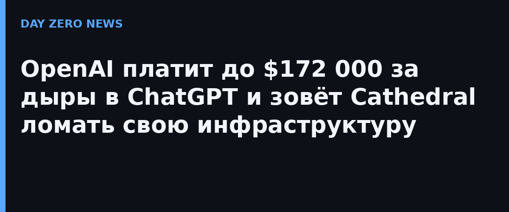

Речь о максимальных планках и множителях, а не о гарантированных выплатах. OpenAI поднимает среднюю точку диапазонов вознаграждений для средних, высоких и критических находок более чем в четыре раза. Критическая уязвимость в ключевом продукте — ChatGPT, Codex или API Platform — теперь оценивается до $30 000; исключительные критические находки, как и прежде, могут дорасти до $100 000, но с новыми бонусами одна выплата способна достичь примерно $172 000. Для сравнения: когда программа стартовала в апреле 2023 года, потолок составлял $20 000.
Поверх базовой ставки теперь работают три вида бонусов. Множитель качества платит за надёжное доказательство уязвимости: изолированный баг, показанный момент эксплуатации и продемонстрированный ущерб. Пятиуровневая программа лояльности вознаграждает исследователей, которые возвращаются снова и снова, а приоритетные кампании на время добавляют отдельные бонусные пулы для свежезапущенных функций. В качестве иллюстрации компания приводит пример: значительное нарушение границы безопасности (условно — возможность читать чужие переписки в ChatGPT) при базовых $100 000 с множителями качества, кампании и лояльности превращается в $171 925. Изменения отчасти ретроактивны: открытые отчёты пересчитают по новым диапазонам, а выплатившим за последние 30 дней вернут разницу.
Второй анонс того же дня — подготовка нового внутреннего спринта безопасности: сотрудники и внешние исследователи будут использовать модели OpenAI, чтобы атаковать и укреплять её же системы. Партнёром названа Cathedral — стартап основателей из бывших сотрудников DOGE, поднявший $160 млн от Andreessen Horowitz и Sequoia при оценке $1,4 млрд. Cathedral запомнилась тем, что менее чем за 12 часов через уязвимости сторонних SaaS-сервисов добралась до внутренних данных Anthropic; та публично обвинила исследователей в нарушении правил своего багбаунти. Так что граница между «белым» тестированием и скандалом в этой истории остаётся горячей темой.
Показателен и прошлый спринт: OpenAI выделяла 25% продуктовых инженеров на поиск слабых мест, а Codex помогал расследовать находки, воспроизводить уязвимости в изолированных средах и готовить патчи. Компания также обещает $1 млрд субсидированного доступа к своим самым мощным моделям в течение шести месяцев для «фронтовых защитников», охраняющих критическую инфраструктуру, и обещает опубликовать архитектуру и уроки спринта.
Гонка защитников и атакующих на ИИ-ускорении идёт с обеих сторон океана: на прошлой неделе Positive Technologies описала первую зафиксированную успешную атаку ИИ-агентов на российскую компанию — взлом занял три часа. OpenAI делает ставку на то, что непрерывный оборонительный цикл с собственными моделями найдёт дыру раньше злоумышленника. Команда безопасности OpenAI представится лично 20–21 ноября на конференции PROMPT2PWN в Окленде, где исследователи смогут потестировать цели вживую.